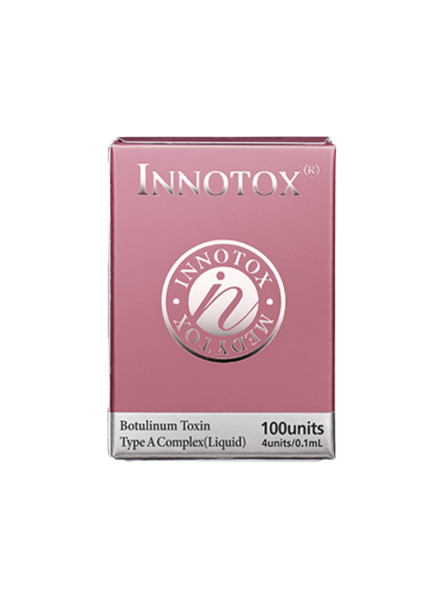
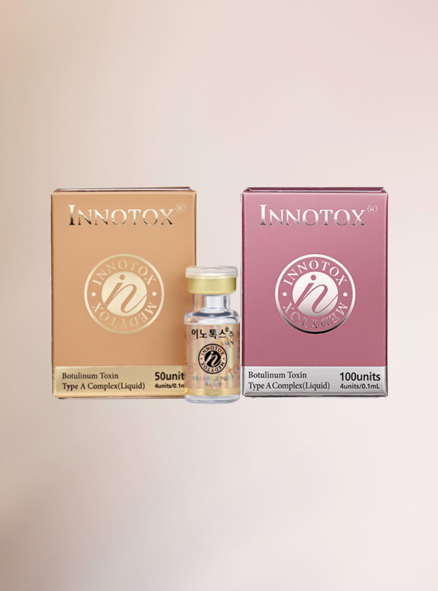

Mejora las arrugas faciales.
No requiera etapa de dilución.
0% Detección de bacterias

100 U
Mejora temporalmente las arrugas faciales, moderadas a severas
Ingrediente Activo
Clostridium boutulinum type A
Descripción
Inyección transparente incolora llena de líquido en un vial transparente incoloro
Transporte
No es necesario enviar en red de frío ya que no es sensible a los cambios de temperatura.
Embalaje
1 vial (100 unidades)
Fecha de Caducidad
18 meses desde la fecha de fabricación
Amacenamiento
Refrigerar a 2 ~ 8 ℃ en un contenedor hermético
¿Por qué es mejor INNOTOX?
Seguridad comprobada en el mercado
Todos los ingredientes derivados de animales han sido excluidos del proceso de fabricación para aumentar la seguridad de Innotox®.

La toxina botulínica, tiene una variedad de usos médicos y estéticos.
Aquí están algunos de los beneficios asociados con su uso:
1. **Reducción de arrugas**: El uso más conocido de la toxina botulínica es en la reducción de arrugas faciales, especialmente las arrugas dinámicas que se forman debido a la actividad muscular repetitiva, como las líneas de expresión alrededor de los ojos (patas de gallo) y entre las cejas (líneas del entrecejo).
2. **Prevención de arrugas futuras**: Además de tratar las arrugas existentes, el Botox también puede prevenir la formación de nuevas arrugas al inhibir la contracción muscular que las causa.
3. **Tratamiento de migrañas crónicas**: La toxina botulínica ha demostrado ser eficaz en la reducción de la frecuencia y la gravedad de las migrañas en personas que sufren de migrañas crónicas. Se inyecta en músculos específicos de la cabeza y el cuello para reducir la tensión y la aparición de los dolores de cabeza.
4. **Tratamiento del bruxismo**: El Botox puede ayudar a reducir el bruxismo, que es el rechinar o apretar de los dientes involuntario, al relajar los músculos de la mandíbula.
5. **Control de la hiperhidrosis**: La toxina botulínica se utiliza para tratar la hiperhidrosis o sudoración excesiva al bloquear temporalmente las señales nerviosas que estimulan las glándulas sudoríparas.
6. **Alivio de espasmos musculares**: Se utiliza para tratar una variedad de trastornos musculares, como espasmos de párpados (blefaroespasmo), espasmos de cuello (tortícolis cervical) y espasticidad muscular en pacientes con afecciones neurológicas como la parálisis cerebral o la esclerosis múltiple.
7. **Mejora de la apariencia de la mandíbula y el cuello**: La toxina botulínica se puede usar para reducir la apariencia de la mandíbula cuadrada o el cuello de "turkey" al relajar los músculos que causan estas características.
8. **Corrección de asimetrías faciales**: Ayuda a corregir asimetrías faciales leves al relajar selectivamente los músculos faciales.
9. **Tratamiento de estrabismo**: Se utiliza para tratar el estrabismo al debilitar los músculos oculares hiperactivos que causan el desalineamiento de los ojos.